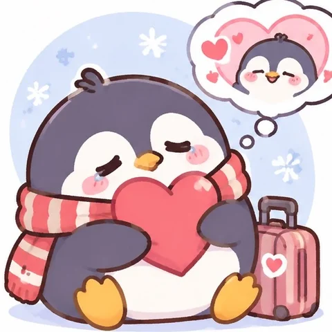

ตอบตามใจจริง แล้วมาดูกันว่าคุณเป็นสัตว์อะไรในจักรวาลคนเก่า
ใช้เวลาไม่ถึง 2 นาที
ผลลัพธ์ของคุณ · คุณเป็นสัตว์อะไรในจักรวาลคนเก่า?

0 / 20 คะแนน
คนไทยมีสัตว์ประจำตัวแตกต่างกันไป แต่มีสิ่งหนึ่งที่เหมือนกัน คือเป็นสัตว์ที่ยังไม่สามารถออกจากความสัมพันธ์ครั้งเก่าได้
ต่างคนต่างความทรงจำ แต่ทำไมใจยังอยู่ที่คนเดิมกันนะ 💔